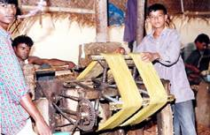
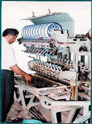
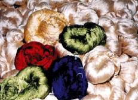
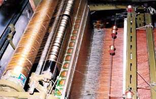

|
|
Raw material production
Reeling
The cocoons are cooked
in hot water and the silk fibre is
unwound from the cocoons. This process
of unwinding of the silk filament from the cocoon is called reeling. Depending
upon the required thickness (denier) of silk filament, the reeling ends from
the required number of cocoons are combined together and reeled. In India, there are 3 distinct reeling devices in mulberry sector: (i)
charkha (ii) cottage basin and (iii) multi-end reeling machines.
(i) Charkha:
Charkha reeling is
widely used among rural sericulturists. Silk
 produced from charkha is of very poor quality as the silk
thread is not uniform and it carries
many slubs. The main reason for the popularity of charkha is that (i) bulk of
the raw silk produced is used in handloom industry (ii) establishment of
charkha units do not need big investment or special skill and (iii) inferior
quality multivoltine and defective cocoons can be reeled more economically on
charkha.
(ii) Cottage basin:
This device is an improved version
of charkha and is indigenously designed
on the principle of the Japanese
multi-end reeling machine.
Cocoon cooking is done
separately in boiling water and reeling is done in a hot water basin attached
to the reeling bench. Each basin has 6 ends and each thread is first passed
through a button to clear the slubs and
waste. Then it is passed through a travellette type of croissure
which is more efficient than the one in charkha. Quality of this silk
is superior to charkha. However, superior quality silk of international
standard is not obtained through
cottage basin as it is hand driven and the alignment of basin is not perfected.
(iii) Multi-end reeling machine:
Multiend reeling machine
developed by CSTRI, Bangalore is an improved version of cottage basin and is found to be a
suitable reeling device to produce gradable quality raw silk. In addition to multiend reeling machine,
good quality raw material i.e. cocoons, proper process parameters, cooking and
suitable post reeling operations and
required water quality are essential
to obtain the gradable silk. It has been found that international quality
silk could be produced from improved
cross breed and bivoltine cocoons to the extent of ‘B’ and ‘2A’ grade,
respectively.
|

|

|
|
|
About 50% silk produced is of charkha and about 35-40% is of
cottage basin and small quantity of silk is of multi-end reeling.
|
Weaving
About 65% of the Indian silk is
woven on handlooms and 30% on traditional power looms. Modern silk weaving
factories with better and bigger  power looms account for only 5% of the total production. There
are about 2,27,701 handlooms and
29,340 power looms in India. Of these, Karnataka accounts for about 8% (18,000) handlooms
and 85% (25,000) power looms. Major
handloom clusters are situated at Varanasi, Kanchipuram and Dharmavaram. At one time all the silk
produced in the country used to be
utilized by the handloom sector. But now due to shift in the demand,
powerloom has come forward to produce finer and quality fabrics and are able
to consume about 60% of the total silk. Most of the powerlooms are using
imported yarn as warp, while silk produced locally (reeled in Charkha and
cottage basin) is being used as weft.
The increased production of silk
using powerloom has also created an urgent demand for better quality yarn.
Many handlooms and Jacquard looms are also using imported silk as warp to
improve their efficiency.
A wide range of silk fabrics are
produced at different centres in the country in both handloom and power loom
sector. The important fabrics produced are plain silk fabric, dupion,
chiffon, chinnon, crepe, organza, satin, tabby silk, Murshudabad silk,
etc. Handloom fabrics are very popular
in the domestic market. The main articles prepared from handlooms are sarees,
dhotis, Gamchhas, angavastrams, lungis, shirtings, crepe fabrics, towels, bed
spreads, furnishings, upholstery, etc.
Back
|